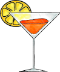

? days until
Evelin and Ricardo's big day!
2nd July 2022 — Piliscsaba, Hungary
Timeline
 15h00
Church ceremony
15h00
Church ceremony
16h00 Photos
 17h00 Cocktails
18h30
Dinner

 20h00
First dance
20h00
First dance
22h00
Cake

23h30 Bride dance
 24h00
Midnight dinner
24h00
Midnight dinner
04h52
Sunrise

Where the heck is this?
Piliscsaba
Piliscsaba (pronounced Pee-lish-tcha-ba) is a town near Budapest, Hungary, located in a valley between the forested Buda and Pilis hills.
There are 8.391 inhabitants, roughly 5% of which belong to the Schmidt (bride's) family. Keep that in mind when you greet locals.
üöÇ Coming by Train: There are trains departing from Nyugati railway station in Budapest, every 30 minutes. We recommend taking the 13h51 train that arrives at 14h30 to Piliscsaba train station.
üöó Coming by Car: Road 10 connects Piliscsaba to Budapest. The 25 km journey takes around 30 minutes, subject to traffic.
Ceremony
üíí The wedding ceremony will take place in the whimsical Calvinist Church of Piliscsaba (if curious here is the Wikipedia page of Mr. John Calvin, who won't be present). Train station is located less than 1 km away (less than 15-minute walk). Parking places available on location or on the streets nearby.
Reception
üçπ The reception will take place in Tovabbjutas (pronounced toh-vab-yu-tash). Venue is located 1.5 km from the Church (25-minute walk). Transfer will be provided from the Church (please request so in the signup form!). Parking places available on location.
Map
Where to sleep?
Coming for a single day
⛺ We would like to invite you to stay overnight if you can and want to. There are some places in town you can book for the night. You can find up-to-date info here. We have pre-booked some of the places. Please let us know if you would like to sleep overnight when you fill the signup form.
Coming from abroad
üè® If you want to stay close to us in Piliscsaba, you can find up-to-date info here. We have pre-booked several places for the dates around the wedding. Please let us know if you would like to stay in any of them when you fill the signup form.
Gift expectations
As you can see from our timeline, we have lived together for a long time. As such, we have hoarded everything we could possibly need for our home, and would kindly request no boxed gifts. Your presence is the best gift you could give us!
Is it going to be Covidy?
We don't know! We want this event to be safe for everyone.
All of us and close relatives have been vaccinated.
We kindly ask everyone who is attending and can be vaccinated to do so, in order to protect the more vulnerable attendants.
I wanna sign up!
Please fill this Google form ASAP (until May 1st) to help us prepare everything ahead of time.